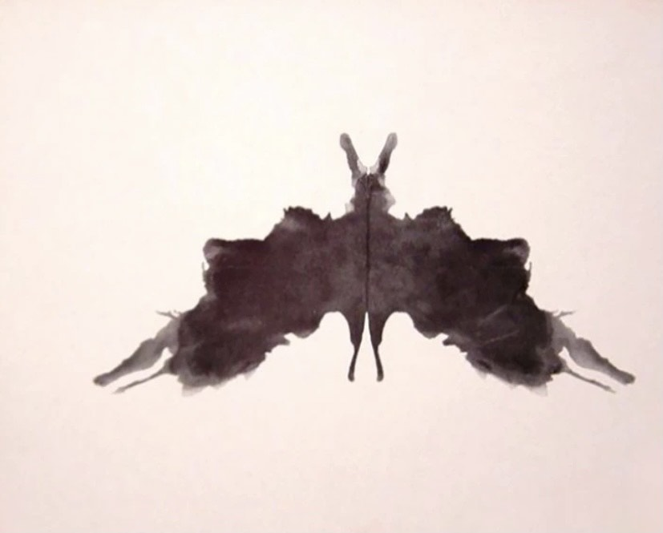
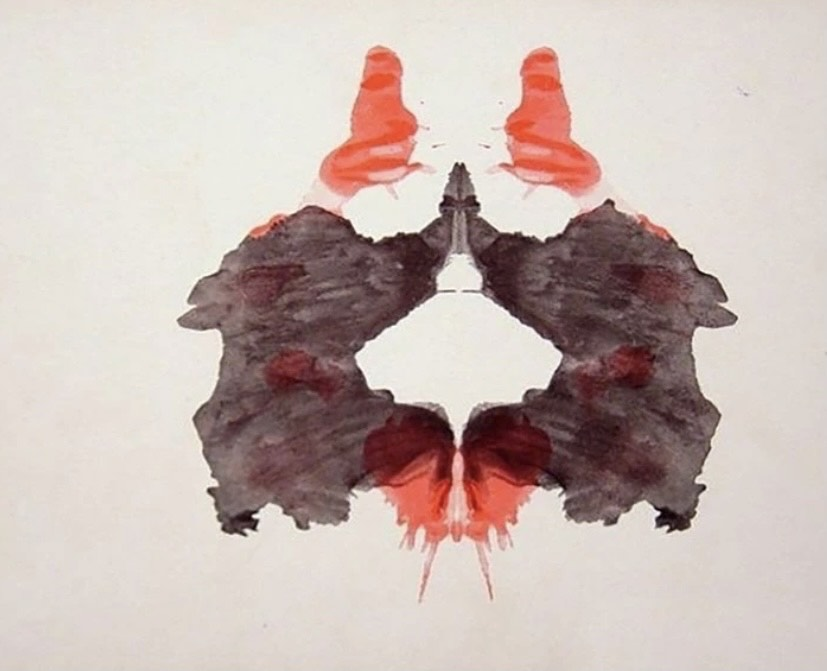
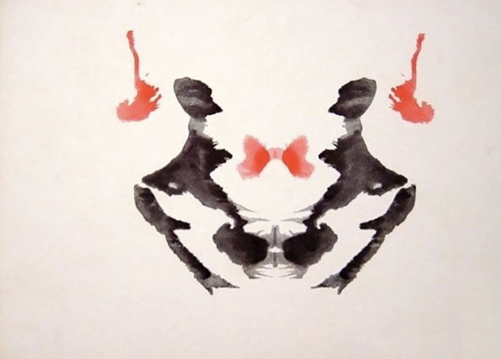

Soy estudiante de arquitectura de cuarto año en la Universidad de Talca, tengo 21 años y vivo en Curicó,Chile
Me interesa presentarme a través de la percepción de imágenes. Hace un tiempo leí un articulo sobre el test de Rorschach en el que básicamente se pretende demostrar aspectos inconscientes de la personalidad por medio de asociaciones establecidas en 10 fotos de manchas en tinta negra y de colores. si te interesa conocer mas acerca del test de Rorschach pincha aquí
Estas son algunas de las imágenes que mas me interesaron:
Primera imágen del test:
En esta imagen lo primero que vi fue una mariposa, sin embargo, según el test la mayoría de las personas logran ver una mariposa, pero si se ve otra cosa puede tratarse de una persona muy creativa
Segunda imágen del test:
En esta imagen logre ver un payaso, lo que puede significar que no tengo grandes problemas al momento de relacionarme con más personas
Tercera imágen del test:
En la ultima imagen lo primero que vi fueron dos personas mirándose y según el test Rorschach significa que puedo ser una persona de rasgos empáticos y si mi respuesta no hubiera sido relacionada con figuras humanas puede significar que se presentan dificultades para relacionarse con los demás
Para tener mas información con respecto a estas y el resto de las imágenes y sus resultados
pincha aquíSolo quise mencionar estas tres imágenes de las diez que tiene este test porque fueron las respuestas que no coincidía con las respuestas más común que tenían las imágenes a excepción de la primera que creí importante mencionar para tener en cuenta en mi presentación, según lo que arroga este test se puede decir que soy una persona con pocos problemas para relacionarme con más gente.